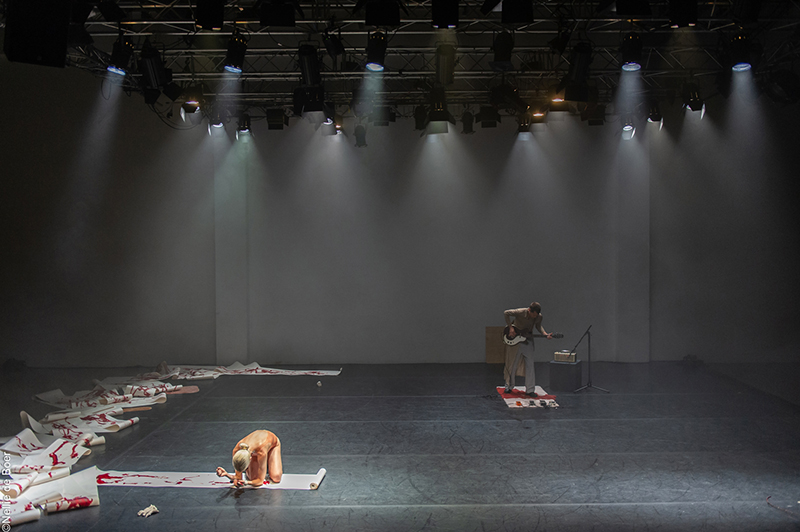
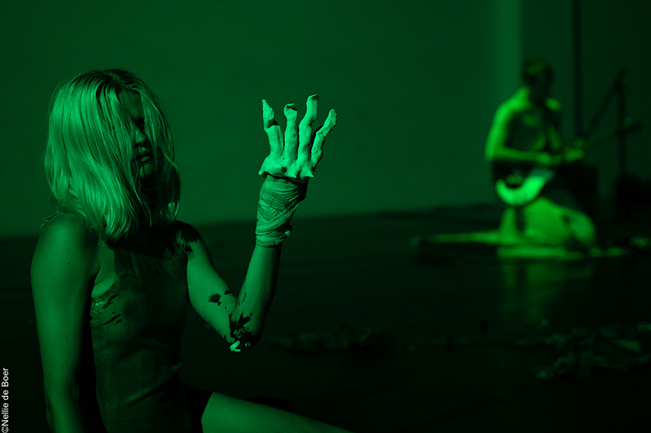
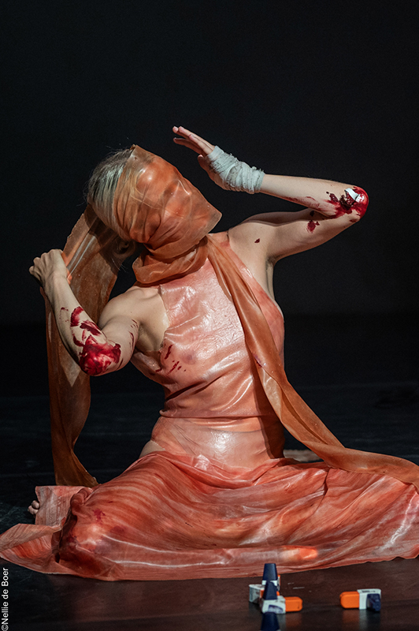
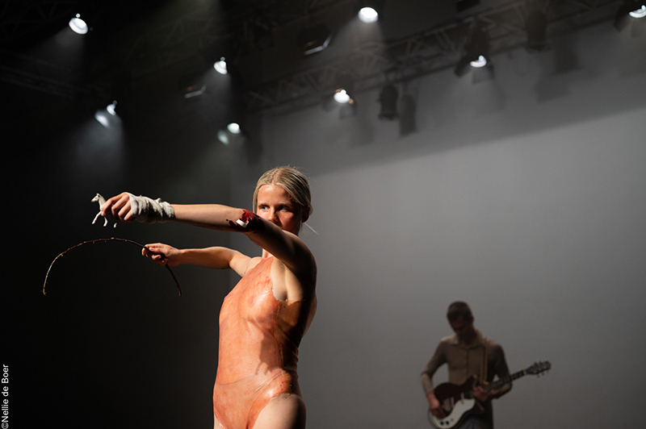
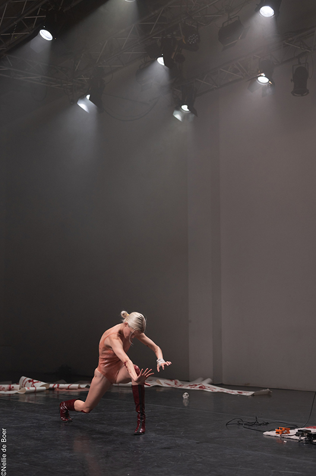
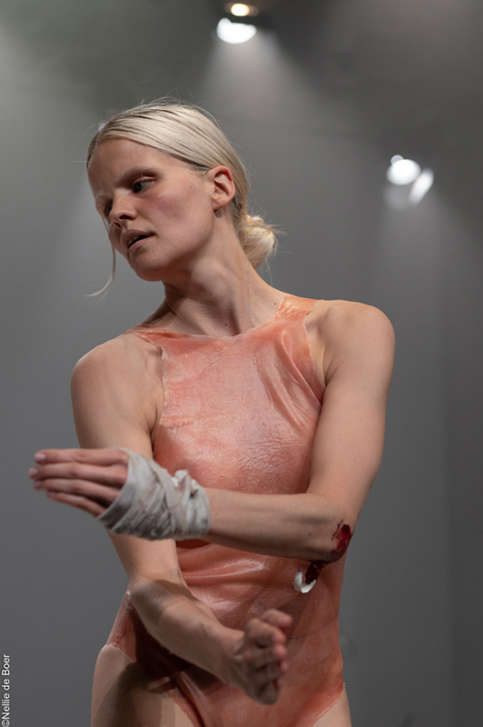
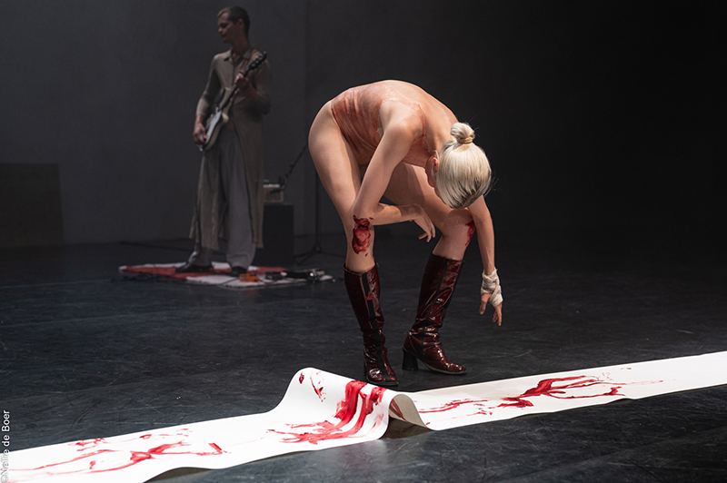

What is it with the medium of dance that draws you to create art, what would you do instead if that wasn’t possible?
I think experiencing dance and/ or live/ performance art is the closest you come to meeting an intersection of familiarity and alienation at once. Meeting a body in itself already comes with so many complexions, so when meeting it immersed in a state of performing brings a mystery and transparency of the multidimensional which I am obsessed with. Also I feel the most intense satisfaction when dancing.
If I wasn’t able to dance or move I would feel constrained and depressed. But if I have to imagine something else it would probably be acting or doing something with kids.
Link to the full performance
I think experiencing dance and/ or live/ performance art is the closest you come to meeting an intersection of familiarity and alienation at once. Meeting a body in itself already comes with so many complexions, so when meeting it immersed in a state of performing brings a mystery and transparency of the multidimensional which I am obsessed with. Also I feel the most intense satisfaction when dancing.
If I wasn’t able to dance or move I would feel constrained and depressed. But if I have to imagine something else it would probably be acting or doing something with kids.
Link to the full performance
Are you currently developing or working on something new?
Yes! I will be an artist in residence at Door Creative Studio Residency in Zandaam for 2 weeks ending with a performance on the 10th & 11th of July.
This work will be a continuation of my artistic, collaborative endeavours with my collaborator, musician, visual artist and brother Lauritz Meier Andersen. Working with concepts as the ever transforming and living memories of a shared womb, we will reshape the format of live concert into an immersive performative experience of music and movement. Come!
Yes! I will be an artist in residence at Door Creative Studio Residency in Zandaam for 2 weeks ending with a performance on the 10th & 11th of July.
This work will be a continuation of my artistic, collaborative endeavours with my collaborator, musician, visual artist and brother Lauritz Meier Andersen. Working with concepts as the ever transforming and living memories of a shared womb, we will reshape the format of live concert into an immersive performative experience of music and movement. Come!
Firstly, I dance. It is never not happening. I dance as a woman, an artist and a
communicator.
Ingeborg Meier Andersen (DK) is a dancer and maker. Her background is rooted in western commercial dance training in contemporary, urban and classical techniques. The centrifuge is her own body from where she can transmit, translate, digest and deflate.
During her studies at SNDO she developed a counter movement/ writing/ thinking practice to her conventional background, which is called getting “offbeat”. The practice insists on a constant updating and morphing of embodiment, which opens the body as a medium where all fixation, order and counts of eight evaporate. At the moment Ingeborg is busy with the notions of (roadtrip of) rituals, (artificial) nature, memory (of being human), and (animistic) ancestors.
Ingeborg Meier Andersen (DK) is a dancer and maker. Her background is rooted in western commercial dance training in contemporary, urban and classical techniques. The centrifuge is her own body from where she can transmit, translate, digest and deflate.
During her studies at SNDO she developed a counter movement/ writing/ thinking practice to her conventional background, which is called getting “offbeat”. The practice insists on a constant updating and morphing of embodiment, which opens the body as a medium where all fixation, order and counts of eight evaporate. At the moment Ingeborg is busy with the notions of (roadtrip of) rituals, (artificial) nature, memory (of being human), and (animistic) ancestors.






